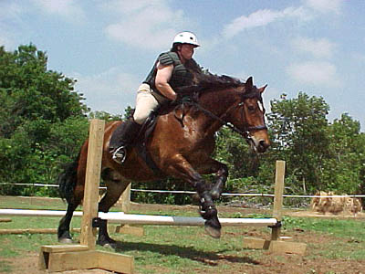
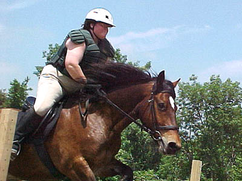
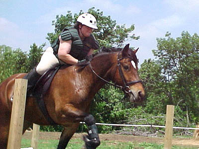
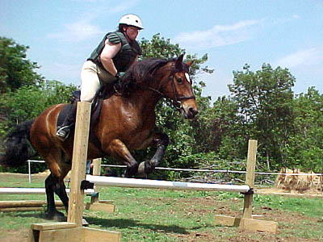
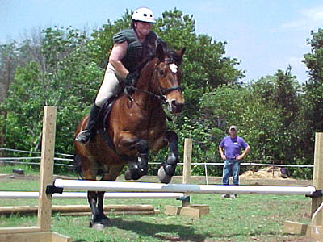

I'm not sure that he likes the jumping,
but he always seems forward and eager.

They worked on bounces.

Sally's practicing going up into two
point without throwing herself forward on Thuy's neck.

Here she let her leg slip back and
put her weight on his front end. Thuy responded by not jumping with both
front feet at the same time.

Better at balancing over her legs
to help Thuy lift his front end...
Personally I'd prefer to see a bit more
give with the hands toward his mouth, but I have the same problem.

Again, he can handle the jumps better
when his rider is balanced.